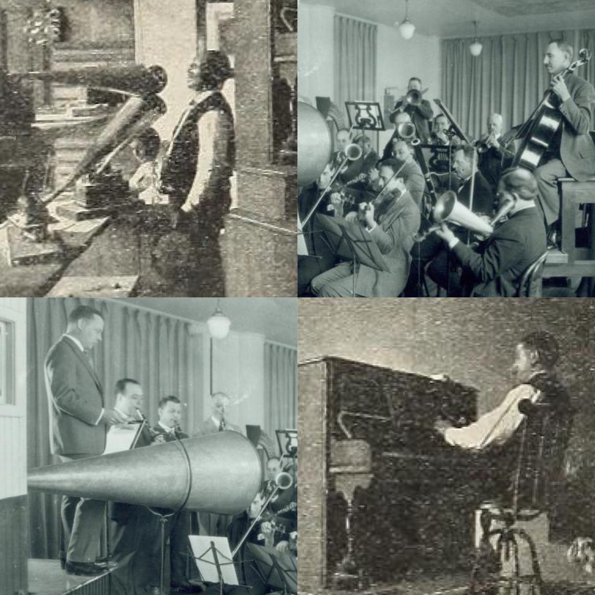
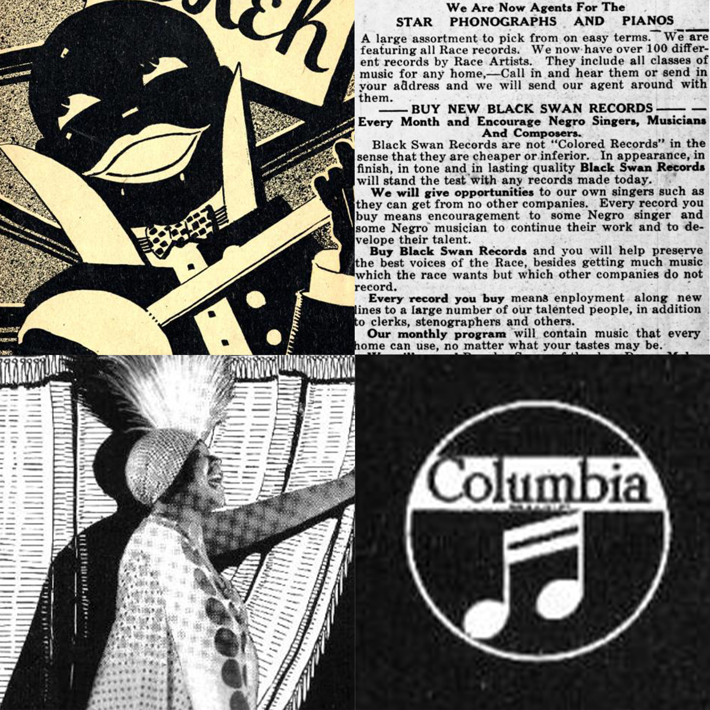
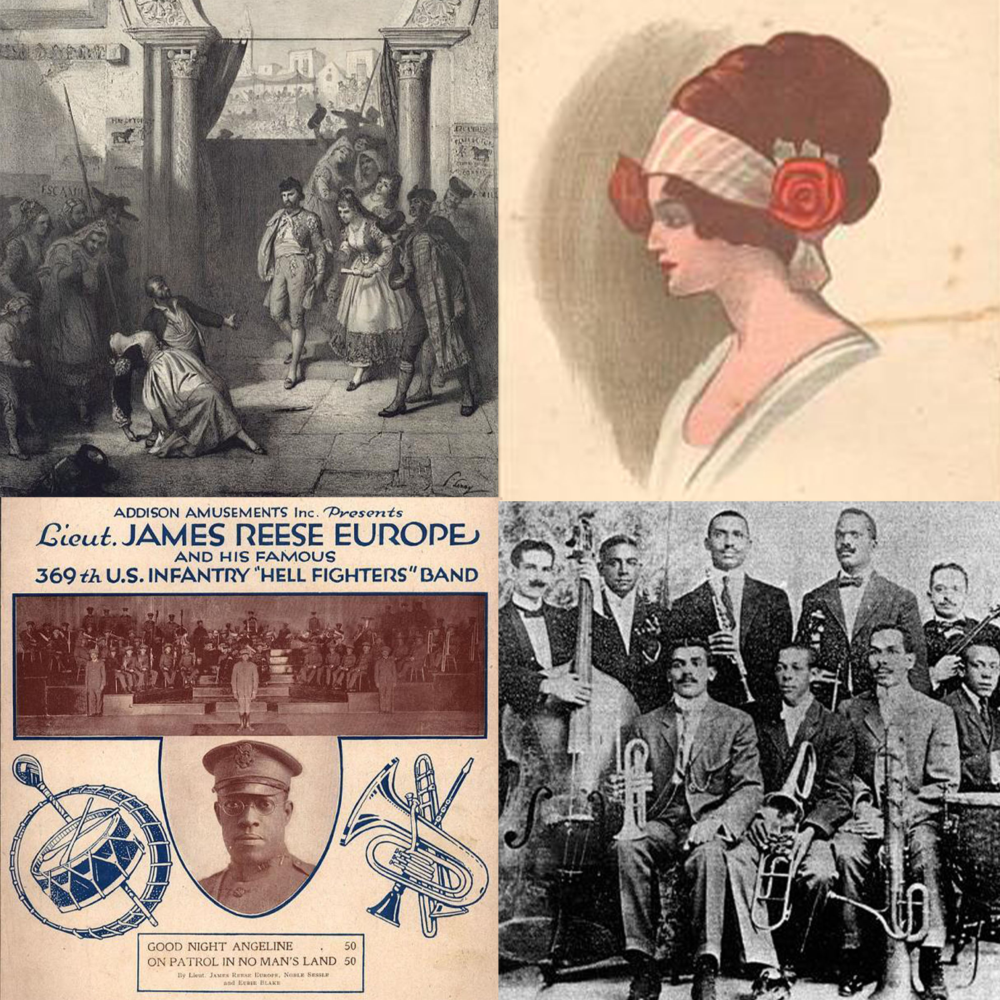
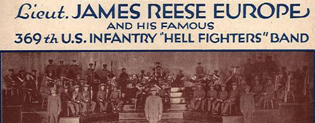
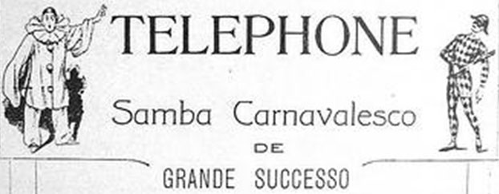
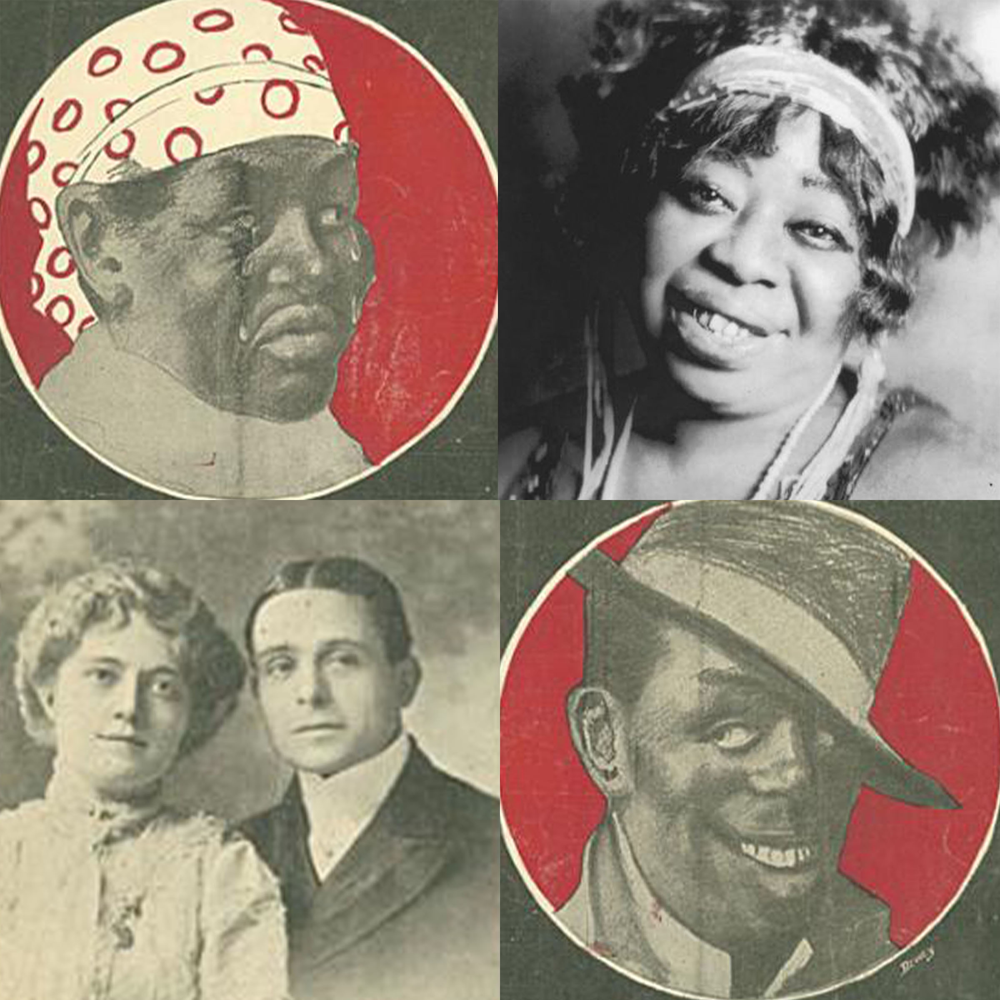
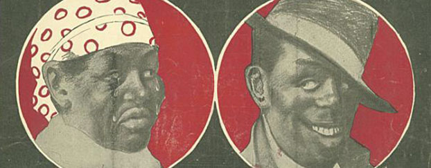
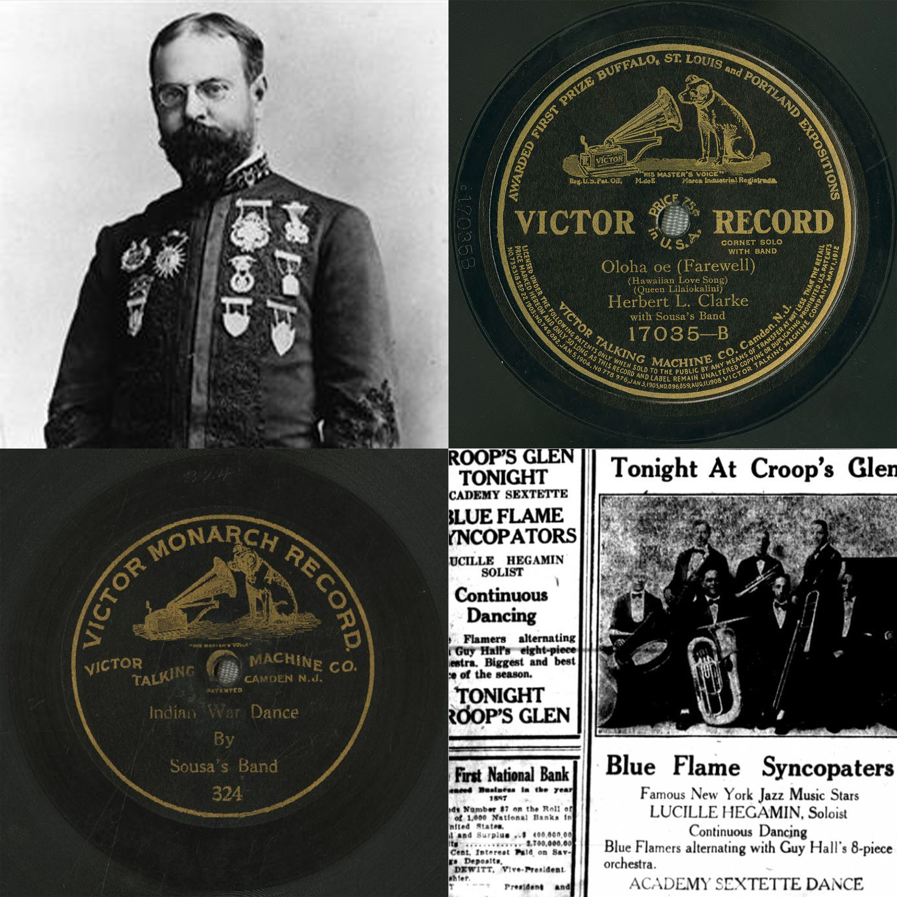
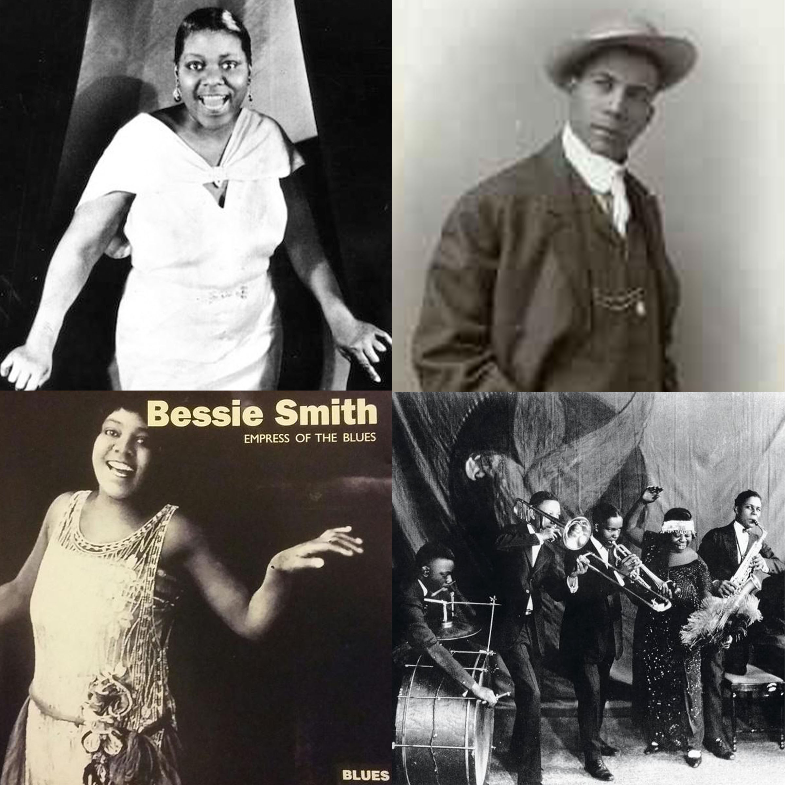
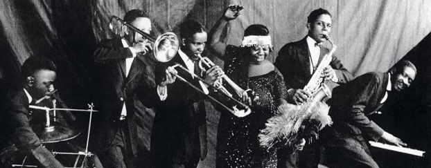

Recording Technologies
These early recordings sound strange to contemporary listeners. Before the introduction of electrical recording in 1925, technology imposed powerful limitations on what sounds could be captured.

Victor Recording Expeditions in Latin America
Between 1903 and 1926, the Victor Talking Machine Company sent its scouts on more than 25 fieldtrips to Latin America, where they recorded nearly 7,000 musical performances.

Race Records
As record companies struggled to figure out what sold and why, they first hit on the idea of ethnic records targeted at immigrants and then invented “race records,” recordings imagined as by and for African Americans. We still live with the consequences today.


Habanera
This distinctive rhythmic pattern from Cuba swept Latin America, the US, and the rest of the world, shaping multiple music and dance genres.

Music Publishing
Publishing companies and vaudeville theater circuits were tightly integrated with each other. Music publishers made their money first from sheet music sales and then from copyrights, and they used vaudeville performances to hype sales.


Twelve-bar Blues
One of the most important and familiar forms in American music, the 12-bar blues was formalized in the early 20th century as a commercial novelty.

Syncopation
This term had a specific musical meaning but also a larger cultural meaning framed by assumptions about race.


African-American Theater Circuits
Like other forms of business in this era, popular theater was organized in quasi-monopolies. In the context of segregation, African American entrepreneurs started their own theater circuit.
Folk Music
The emerging discipline of folklore and its guiding concept of authenticity came to exert an important influence on music recorded throughout the Americas.